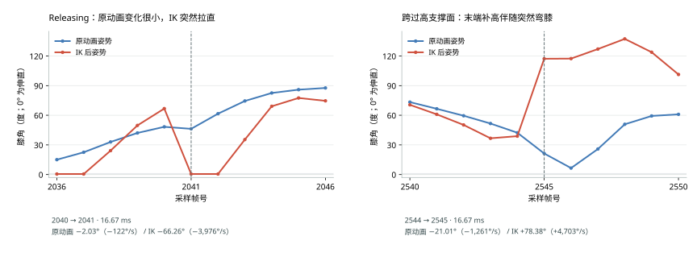

当前处理机制示意
候选行为未验证 · 示意
示意台阶
真实采样 / 数字不会随示意动画改变
原因判断与待验证方向
这才是那一帧真实的 23 个点 · 俯视
点位直接来自逐点 CSV，两个图使用相同坐标比例。青色命中 3.06 m 踏面，红色命中 3.24 m 踏面；#14 是发生跨边的点。点阵不等于鞋网格轮廓，也不能单凭这一帧保证所有位置都不会穿透。
记住这一点
本页包含采样事实、原因判断和候选行为。三者证据强度不同，不能把右侧示意当成已经证明正确的修复方案。先看本轮核对结论，再查看各项数据。
结论：不能把所有伸直都算作 IK 缺陷，也不能只凭动作看起来缓和就认定修改有效。本节膝角统计来自已保存采样的只读审计；下方动画来源与旋转段另列实际 C# 函数实验、收益和回归，不把几何目标需求写成完整骨骼结果。
最近是否改善：9 月 30 日的 93327479… 与 10 月 1 日的 3cb49fba… 使用同一条 2716 帧录制，起始 Body、输入序列、Body 轨迹及 logic-locked 表现时钟一致，程序内容身份不同。按 Body Tick 与左右脚对齐后，5432 条记录的原动画膝角、求解膝角、脚位、权重、目标伸展比及末端补高均无差异。因此这组输入没有显示最近采样相关修改带来了新的 IK 改善；也不能据此否认其它动作中已经保留的局部修正。
原动画基准：使用本帧混合动画在腿求解前的髋、膝、踝位置计算膝角，0° 为伸直。取点发生在骨盆平移之后，但平移同时作用于整条腿，不改变夹角；脚踝预旋转也不改变这三个关节点的位置。角速度为相邻连续帧的角度差除以本帧 presentation-delta-seconds；另看 Δ(求解膝角 − 原动画膝角) / Δt，区分动画自身运动和 IK 追加的变化。用求解后三点重算膝角，与已记录角度的最大误差小于 0.001°。
| 当前同一份采样 | 原动画 | IK 后 | 含义 |
|---|---|---|---|
| 近伸直记录（膝角 < 1°） | 58 条 | 504 条 | 仅统计位置权重 > 0 的 5171 条脚记录。两侧同时近伸直为 54 条，IK 另使 450 条进入该阈值；这不是 450 次独立抖动，也不自动判为 450 个错误。 |
| Landing / Releasing 角速度中位数 | 236.6°/s | 196.0°/s | 使用相邻两帧位置权重都 > 0 的 1984 个间隔；中位数更低也可能包含冻结或近直平台，不能单独判为改善。 |
| 相同间隔角速度 P95 | 1243.8°/s | 1622.6°/s | 这里比较速率绝对值。较快的变化仍被放大，需逐事件检查额外弯直，不能只看平均或中位数。 |

额外拉直：当前右脚 Releasing 的 2040→2041 帧，原动画为 48.29°→46.25°，只伸直 2.03°；IK 为 66.77°→0.51°，16.67 ms 内伸直 66.26°。原动画速率约 −122°/s，IK 约 −3976°/s；位置权重为 1、来源未变，目标距离达到腿长的 105.835%。这处突变不能归给原动画。
原来那段 Landing 也应修正解释：旧手动采样右脚 33765→33766，原动画本身从 57.44°→26.87°，已经快速伸直 30.57°；IK 从 53.59°→0.52°，伸直 53.07°。27.325 ms 内的变化速率约为 −1119°/s 与 −1942°/s，IK 在该间隔额外增加约 22.51° 的伸直。不能把这 53° 全算成 IK 新制造的变化。旧两包原先统计的 1473 条近伸直记录中，同帧原动画均未低于 1°，但仍需按上述速率与事件判断影响。
偶发边缘跳变仍有明确记录：当前左脚 2544→2545，第 2 个输出脚掌探针从 Y=0 的地面命中改为 Y=0.56 m 的高支撑面；探针当时在 Y=0.07124 m，要求补高 0.48876 m。末端 OutputFootprint 约束追加 48.876 cm，满权重脚底一帧升高约 50.697 cm；原动画膝角在减少 21.01°，IK 却增加 78.38°。此处路径身份未变、修订原因是 0，不能归给本帧路径重算。整包有 17 条正权重记录的未加权末端补高超过 5 cm，其中 6 条为满权重；它们不是 17 次独立跳脚，也不全等于实际脚位抬高 5 cm。
| HTML 项目 | 实际实现和验证状态 |
|---|---|
| 01 · 台阶边缘 | 末端脚掌查询和防穿补高已经运行；平移、旋转、净空共同连续跨边的替代方案尚未实现。2545 的新证据仍能重现硬补高。 |
| 02 · 路径重算 | 已有路径残差和高度响应；页面提出的提前量与高候选时序协调尚未形成新修复，不能删除后续确实会碰到的高踏面。 |
| 03 · 释放脚锁 | 当前水平冻结仍在运行。连续历史对照已完成；提前解除冻结候选把恢复步长从 20.162 cm 放大到 26.435 cm，已撤回。 |
| 04 · 支撑断续 | bf9724736 已修改接触预备目标有效期；100 帧目标交接函数实验中缺失目标从 27 帧降到 0。它验证到目标交接层，原异常的完整骨骼结果尚未验收；本次 2716 帧输入没有覆盖那种旧缺陷。 |
| 05 · 动画切换 | 18e1f2a4f 来源修正已完成 83 帧 Goal／查询实验。两版旋转候选扩展到 58 帧双脚及正式骨盆计算后，仍增加左腿超长时间，已撤回运行改动。Native Slot 捕获、新贡献合成和完整 IK 仍未验证，不能称为整项完成。 |
| 06 · 膝盖弯曲 | 本次已补原动画膝角及角速度对照。脚目标、身体运动、可达性共同协调的新修复尚未实施；不能重复在固定脚点之后直接平滑膝角的失败做法。 |
已记录的错误：1178–1180 帧，骨骼由权重 1 的 Stored 姿态提供；原 FootMotion 入口只遍历 Live，于是选中权重 0 的 Idle，并取出 Contact=1、LockWeight≈1。1177→1178 左脚原踝旋转变化为 0°，有效目标却转了 137.574°，并由 Swing 进入 Landing。1181 接到权重仅 0.03029 的新动作后又退出锁脚；原踝只转 1.158°，有效目标转了 137.934°。这是脚步命令与画面来源错配，不能先用旋转平滑掩盖它。
范围：本包有 18 个表现帧、36 条双脚记录选中零权重来源，其中 26 条仍输出正旋转权重。涉及这些帧且相邻两帧位置权重都为正的区间中，有 15 次有效目标转角比原踝额外大于 20°；这些是录制统计，不是候选收益。
当前候选：Source 在正式采样时生成 FootMotion，Native Contribution 携带同一份样本，Stored 在捕获姿态时保存对应样本，FootPlacement 再从实际参与姿态的贡献取得输入。Stored 保留捕获的接触与作者锁权重，但停止推进已经没有播放时钟的未来落地预测。作者总权重、接触曲线和原动画均未改；没有恢复历史旋转插值实现，也没有新增第二套 IK。名称和观察曲线元数据在资源目录初始化，运行时只查表。
动作贡献还重复乘了一次：2041 帧的实际动作骨骼混合权重为 0.531232，发布给下游的动作来源权重却是 0.282207429（前者的平方）；Run 仍为 0.468768，FootMotion 因此误选 Run。限定为一条 Run Live 加一条 Action Live 的 19 个混合帧均符合这个重复乘权关系，最大数值误差 2.22×10⁻⁸。该逻辑追溯到 ce6cdb09c7，不是本轮新增。候选让动作贡献只计权一次，基础姿态逐骨骼贡献使用实际剩余权重；骨骼混合结果、作者总权重和曲线不变。这里纠正的是 IK 消费的来源记录，不代表已证明 2041 的膝角改善。
已执行到真实 Goal：配套窗口先执行正式来源选择与 CaptureStoredPose，再将结果送入 Unity 中的原 CharacterFootLifecycle，连续推进左脚 1174～1186（13 帧）和右脚 889～958（70 帧），重新查询场景中的脚掌支撑。两段旧版脚位和旋转均精确复现录制；两版预热计算均为 0 B。无接触段 1178～1180 保持 Swing、无锚点，最大额外转角从 137.5741° 降至 0.000143°；1181 也不再突然反向旋转。真实接触段 894 保留 893 的原锚点，随后随 Live 请求释放，最大额外转角从 1.33253° 降至 0.05192°。结果见13 帧 Goal 实验、70 帧 Goal 实验，配套窗口维护可播放说明。
同时保留不利结果：真实接触段固定录制髋位置计算的超腿长记录从 4 帧增为 5 帧；两版最大伸展比均为 1.003319，新增的 954 帧约超长 0.54 mm。这不是完整候选骨盆反馈，但已经不能支持“伸直修复”或“可达性没有回归”的结论。有最终查询的 12＋70 帧，最大正穿透约为 7.45×10⁻⁹ m；1174 原本 Goal 不可用且无最终命中，净空保留为未知，不能算安全通过。
编译与运行边界：动画程序集定向编译 0 错误、0 警告。这批是 Unity 内独立编译的真实函数实验，不是正式 Test Runner：混合动画姿态、预测、路径和骨盆可达性裁决保持录制输入；未执行 Native Slot 历史页捕获、新贡献合成函数或完整 FBBIK。实验时共享 Editor 仍报告其它模块编译失败，因此没有将磁盘候选当成主程序集已加载。本轮没有启动 Replay。
跨阶还要向前追：左脚路径在 2542 帧已因 UnreachableEdge 拒绝：查询得到 70 cm 垂直边，正式上限是 30 cm。此时身体 X 已停在 10.04 m，Y 保持约 0.01 m，只沿 Z 滑动；原动画脚掌仍向前摆，X 从 10.283 m 增至 2545 的 10.466 m。2542 的表面几何已有 70 cm（Surface=-8450）和 56 cm（Surface=-8440）高面，但从约 45 cm 高度向下的路径查询仍只命中地板。2544 目标已要求约 49.9 cm 修正，响应每帧只增加 3 cm，2545 输出脚掌碰到 56 cm 高面后追加约 48.9 cm。该窗口包含身体在台阶侧面停住、脚继续前摆的冲突，不能当作正常上楼并靠放宽阶高、删除高面或取消冻结宣告修复。
动画状态机确实在混合骨骼。但 FootPlacement 当前从最大贡献来源取整份脚步请求。下面两帧都没有 Stored，动画来源权重也没有重复乘权；跨过主来源交接点时，脚步请求仍会直接由 WalkStart 切到 Idle。作者总 FootPlacementWeight 两帧均为 1。
| 新 full · 右脚 | WalkStart / Idle 贡献 | 所选脚步锁权重 |
|---|---|---|
| 2206 | 55.556% / 44.444% | WalkStart：0 |
| 2207 | 44.444% / 55.556% | Idle：约 1 |
2206→2207 原动画脚踝旋转变化 3.228°，按记录的源踝、目标旋转与旋转权重重算，有效目标变化 34.329°。未经权重的目标旋转只变 0.575°，两帧当前、选中和最终支撑法线均为向上，目标投影没有退化。突变发生在锁权重把修正从 0 接到约 1；只平滑原始目标角度不足以修复它。历史 32946→32947 的同类证据也已核实：WalkStart 从 51.467% 降至 48.767%，Idle 从 48.533% 升至 51.233%，两条均为 Live；对应原踝 2.319°、有效目标 59.411°。这解释了为什么上一项输入修正不足以关闭第 05 项。
第一版旋转候选已测出不利结果：15894ee7b 在 Unity 中独立编译真实源码与状态类型，完成 Live 23 帧和 Stored 两段 13／85 帧的连续计算。Live 整窗最大转角为 37.0679°→25.1218°，相对原动画的修正变化为 31.1801°→9.0765°；三窗预热计算均 0 B，最终查询未新增正穿透。但 Live 的固定髋最大伸展比为 98.389%→99.818%，真实接触 Stored 也有同帧余量下降。2211 原动画膝角为 25.8279°，同一髋和骨段长度下目标需要的几何膝角为 20.8593°→6.9297°；这不是新 FBBIK 结果，却足以否定“没有代价”的说法。跨版本业务对照保留失败，单版函数运行成功不等于方案通过。
修订版也被双脚实验否决：8c0e878f8 改为只衰减交接残差，随后与历史版、第一版一起连续执行 2192～2249 的 58 帧双脚和正式骨盆计算。历史版重现两脚脚位、旋转和骨盆 Goal，三版均为 0 B。修订版右脚 2207 转角为 34.3287°→13.0994°，2211 所需几何膝角为 20.8593°→24.5224°，接近原动画 25.8278°。但左脚 2229 原动画仍弯曲 44.4257°，候选目标伸展比却从 98.1079%→100.7762%，超出腿长约 5.40 mm；两版候选均把左脚超长从 1 帧延长到 3 帧。骨盆 Goal 没有因此改变，无新增正穿透不能抵消新增拉直。完整 FBBIK 尚未求解。
当前运行代码：已撤回两版旋转响应及专用前态，6 个相关生产文件恢复到 552f13083，保留 18e1f2a4f 的来源和动作贡献修正及全部失败证据。采样结构恢复 capability 4 / full sampler 3；撤回后两程序集定向编译均 0 错误、0 警告。这不代表共享 Editor 已加载新代码，最后检查它仍报告其它模块编译失败；本轮没有启动采样或 Replay。后续验证先沿 Native Slot、正式动作曲线和释放业务继续，不能靠调参接受这项旋转回归。
扩窗中的原动画基准：2224 的世界转角峰约 178.67°，原动画脚踝本身转 178.6725°、表现根转 176.0301°。该峰属于输入的大转向；评价 IK 应另看相对原动画的修正变化。双脚几何膝角使用同一原姿态的骨段长度，候选只替换实际重算的髋和目标踝，不能混用骨盆前后的三个关节点。
连续验证的起点：2192 帧作者总权重为 0，2193～2201 从 1/9 恢复到 1；2197 接入锁脚，2204～2206 释放，2207 再次接入。配套窗口从真实关闭帧开始推进同一场景，检查部分作者权重下的最终脚姿态、完整窗口角速度、净空和腿长需求，避免从 2200 的旧状态补造新旋转历史。仅画平滑曲线或只比较 2207 一帧不足以通过。
CharacterFullBodyIkBendHistory；整份 Goal Set 和生效中的调参值也须逐项对齐，不能只凭三条脚部 Goal 就假定齐全。当前 Presentation 包只有参数、状态机和来源等表，没有骨骼姿势表。脚目标改变后的地面命中必须重新查询，不能拿旧探针结果冒充。现在可以核对上述真实角度与跳变；不能宣称整套 IK 已经精确还原。当前数据：20260930-172333-3cb49fba52604669bfae7fe6eda3aabc；同输入历史：20260930-102323-93327479f6dc4c8fac53734da8169bd4；旧 Landing 片段：20260930-071630-0398ffce96dc4fcdb3f8696d1c0e51eb。前两包按 Body Tick 与左右脚对齐；手动包只做包内原动画对照，不混用其表现时钟计算修复收益。
2026-10-01 · 采样缺口：已有连续实验只重跑单脚目标至 Goal，预测结果与路径仍来自记录。旧 CSV 没有完整未来身体轨迹，也没有完整的计算前脚态，不能继续把扩大窗口或验证上游预测说成“已有输入足够”。新 full 采样补充脚端计算前状态、完整轨迹表、事件时间与来源身份；旧数据不补造。整份求解前骨骼姿势和完整 FBBIK 弯曲历史仍未采集；采样字段本身不代表行为已经改善。
2026-10-01 · 采样栈回归已完成运行验证：abfaf3895 重犯了 cd0d0a73e / 413e931de 已处理的大结构复制问题。23b52330c 改由帧 Bank 的预分配页保存前态，视图引用该页及正式曲线，原采样器在提交后同步复制到 packet。完整栈帧从 953,392 降至 664,080 字节；原 2716 帧回放现已全部完成、停止并保存，新增输入表存在，正式错误列表为空。本次采样包主表只是新的复算基线，自动结果为 baseline-created:2716，不证明伸直或跳脚改善。执行约束见 AGENTS.md，运行及十分钟重载的耗时记录见当前状态。
重新采样：使用原入口的 character-foot-ik/full（capability 4 / full sampler 3），保留同一场景和配置，复现上下楼问题后停止保存。主表新增 foot/pre-state、input/body-trajectory、作者总权重和 PosePlanHash；另有 future-body-trajectory 逐点时间/位移/速度表，以及 pre-state-response-lineage 来源身份 UTF-8 字节表。core 不含这些复算输入；它们不能恢复旧采样缺失的内容，也不能独立恢复整个 Unity 世界。
左脚 14120→14121 的中心 Z 后退 1.107 mm，第 14 点却前进 1.186 mm，跨上高 18 cm 的踏面；末端追加 16.041 cm。不能仅归因为水平前移过快：旋转后的脚掌覆盖也在变化。需要核对完整脚姿态的跨边过程，当前图没有证明候选轨迹无碰撞。
右脚 33624 的高候选在中心路径终点外 8.699 cm，沿程坐标被 Clamp，高度仍为 0.960001 m。当前位置输出脚掌查询余量约 8.825 cm，包络仍硬抬 8.142 cm。但追到 33634，同一右脚、同一预测落脚事件的第 15 点实际命中同一高踏面（Surface=-16060，Y=0.96 m），33635 接触目标也覆盖它。不能把这个候选当成无关障碍删除；尚待解释的是为什么必须在 33624 突然硬抬。撤回“错误候选已经确认”的表述。
用 12570 的完成状态初始化一次，连续执行 12571～12585 的真实旧、新函数及脚掌查询。旧版 12572 末端硬抬 6.456 cm；当前版硬抬为 0，却连续冻结三帧，目标距离最高达到腿长的 115.625%，12575 恢复时水平移动 20.162 cm。12574 冻结前的位置重查已有脚底净空，当前规则仍停脚。已有 Release 残差和输出历史回写均参与递推；不能把它们当作从未实现。见可播放的完整对照与正式测试结果。
第二份手动采样共 27 条：Swing、Contact=0、LockWeight=0、无接触锚点、作者权重=1，新路径有效；旧 PlantTarget 事件等于已释放事件，最终权重却为 0。修改前，生成端与消费端都保留了仅凭事件身份延续旧目标的规则。本轮已在生成端要求正式 Contact 仍大于 0 才保留当前接触的预备目标，消费端改为直接使用生成后的 Tracking 状态，删除重复判断。接近下一次落地的分支保持原规则。新基线没有复现这类记录，不能拿它验收此缺陷消失。
32946→32947 源脚踝转角 2.319°，有效目标转角 59.411°，正式锁脚权重 0→1。采样版本中骨骼姿态已可混合，而 FootMotion 只选择权重最大的 Live 来源。必须区分作者参数时序、来源切换和旋转响应；不能未经确认改变手调参数的生效语义，也不能直接移回历史 7b641f0af 的整套实现。
两包中，位置权重大于 0 且求解膝角小于 1° 的记录为 1473 条，Landing 与 Releasing 共 1100 条，占 74.7%；这是脚记录比例，不是独立抖动次数。Locked 只有 35 条有效输出记录，不能据此认定它没有风险。12573 冻结前后为 81.456%→100.670%，12574 为 96.810%→115.625%；这是固定本帧髋姿态的复算，未包含修改后的骨盆、接触和碰撞反馈。
历史经验对本轮的限制：提前释放曾减轻局部腿长冲突，同时造成离地和输出权重回归；求解后膝角补偿曾产生约 12.3 cm 锁脚离地和 12.8 cm 接触平面穿透；仅把可达限制挪到弹簧前不能消掉已经发生的越界。512f54a28 当时已经包含部分权重脚目标抵消骨盆平移的补偿，却仍出现骨盆异常；02a277373 撤回硬约束时保留了补偿，不能把“现在已有补偿”当作重试旧硬夹取的新依据。当前脚掌支撑及末端保护只求竖直补高，不能仅凭这些标量命中证明水平跨边安全。历史整套旋转实现缺少单项裁决，而本轮两版旋转候选已有双脚失败证据并撤回；下一方案必须说明如何避开这些具体失败条件。
新基线的实际边界：录制 757f243033414fc7b123c97e2fcb0d70 完成 2716/2716 帧，生成 5432 条左右脚记录，属于 logic-locked 基线。此包有 526 条正位置权重目标超出腿长，17 条末端补高超过 5 cm；50 条“着地、路径有效但权重为 0”全部来自作者总权重为 0，不能冒充第四项复现。正式分析有 6 项 MissingEvidence，总分不可用；这份修改前的基线不包含候选或 A/B 结果。
历史调查基线：保存的原始 Proof · 正式分析报告。第四项修改曾通过 Unity 编译，但当时的候选回放因 Attack 黑板缺少编译声明绑定而停在启动阶段，消费 0/2716 帧；更早的表现节奏补采只留下 51 个姿态帧，均不算验证通过。后续完整 2716 帧采样已经成功保存，结果见本节上方的 2026-10-01 审计；这段记录保留历史阻塞原因，不表示当前仍卡在启动阶段。覆盖第四项原始异常的完整骨骼 A/B 仍未完成。
第四项的连续采样函数实验已通过：查看同样 100 帧输入的真实旧、新函数对照。历史版重现 27 帧目标缺失，当前版为 0；前 45 帧目标类型与位置一致，53 帧无接触摆腿均正常接管。这是插值前目标交接的证据。最终权重、重新查询的脚掌碰撞和骨骼输出尚未验证，不能据此宣布 Landing / Releasing 伸直消失。后续按两个完整场景规划，见场景范围。
已完成的 Releasing 历史对照边界：正式 EditMode 为 1 个用例、1 个通过；每版核对 368 个原探针，对照时的输出与原采样逐帧重合，两版预热后的计算分配均为 0 B。冻结前历史版取自 413e931de。腿长对照固定使用采样髋姿态；未重跑骨盆与腿 IK，23 点向下查询不等于鞋网格连续扫掠。更早的 4107 / 4127 / 4131 硬抬样例仅保留历史记录，没有在这次对照中连续重跑。此结果绑定当时的版本，不是上方新旋转候选的验证。
新增反证：“本帧插值脚掌已有净空就立即放开”的候选，把最大腿长需求从 115.625% 降到 101.498%，但真正恢复前移时的步长从 20.162 cm 增到 26.435 cm。恢复帧从 12575 提前到了 12574，只盯 12575 会得到假改善。按实际恢复事件对齐后断言失败，候选运行时改动已撤销。同一页面的红线保留失败实验，不能把它当作可测修复版。
点位直接来自逐点 CSV，两个图使用相同坐标比例。青色命中 3.06 m 踏面，红色命中 3.24 m 踏面；#14 是发生跨边的点。点阵不等于鞋网格轮廓，也不能单凭这一帧保证所有位置都不会穿透。
以下是研究范围。现有状态、残差、响应和末端约束已经在运行；各层最早产生了什么变化、候选如何避免历史回归，必须先说明清楚。
动画脚姿态和预测落点提供查询范围。确认扫略候选对应的真实踏面、脚掌覆盖和跨边位置，再生成支撑与避障需求。
CharacterFootGroundEnvelope
CharacterFootCurrentSupport结合正式接触事件、当前阶段和有效预测路径选择目标。已经结束的接触，不能仅凭残留的预备落点继续压住摆腿目标。
CharacterFootStateTargetResolver
CharacterFootLandingRuntime核对已有位置历史怎样接续、旋转怎样改变脚掌覆盖。跨边与恢复前移的候选推进规则还需证明可行，作者参数的时序也不能被悄然改变。
CharacterFootLifecycle
CharacterFootInterpolationRuntime脚目标交给现有骨盆与腿求解链。先分离错误脚目标造成的不可达，再评估剩余骨盆协调需求；历史已否定求解后强改膝角与保持脚点同时成立的做法。
CharacterFootStrideHipsBuilder
CharacterFinalIkFullBodySolver作者总权重 FootPlacementWeight：当前正式入口是注册曲线 m_FootIK；编译器把它归一化并保存为 SourcePlan 的 m_FootPlacementWeightCurve。AnimationClipPlayer 按动作时间采样，Blend Space 按动作来源权重混合，随后由 Pose Graph 传给 FootPlacement。它不会根据地面查询重新生成。Foot Placement 节点也支持显式 weight 输入，但当前 Corin 图未连接该端口。两份采样共 13160 条左右脚记录，这个总权重全部为 1。
每脚接触与锁定参数：Contact、LockMode、LockWeight 来自独立的正式 FootMotion 数据，用于请求接触、选择锁定方式和控制锁定强度。它们与总权重不是同一条曲线。Landing、Locked、Releasing 是脚部运行时状态；正常输出的位置权重仍取 FootPlacementWeight，有接触时的旋转权重取 FootPlacementWeight × LockWeight。总权重为 1，并不表示每一帧都要求锁脚。
最终 PositionWeight：正常目标直接使用作者总权重；目标不可用时，BuildUnavailableRequest 清零位置和旋转权重，ResolveGoalTarget 据此输出零权重 Goal。这是一条额外的运行时输出规则。第四项展示的是这条规则造成的 0 / 1 切换，不是新烘焙的权重曲线。
修改前这五帧具体错在哪里：右脚已经是 Swing，Contact=0、LockWeight=0、RequestsLock=false，接触锚点不存在，旧事件也已记录为 Released。生成端 PrepareApproachPlantTarget 仍保留该旧目标；消费端 IsPreparedPlantTargetActive 又只凭 CurrentContact 的事件编号匹配就认为它有效，ResolveSwingTarget 据此判旧接触拥有目标，强制选择 CurrentSupport。探针无命中时，这条分支取消整笔输出，尽管新 GroundPath 始终 Accepted。
历史设计与此次修正边界：386073b62（2026-08-30）加入当前接触与下一落点的所有权区分；76bbc86cc（2026-09-28）解除了普通摆腿对即时脚底命中的依赖，但保留当前接触分支。当前证据证明这个分支把已释放的旧事件误当成仍有控制权。本轮候选已由 PrepareApproachPlantTarget 统一处理有效期，清理 Contact=0 的旧 Tracking 目标；模块消费其状态，不再独立复判。没有强制权重为 1，也没有改作者曲线。右图仍是该窗口的预期行为，尚无覆盖原异常的修改后回放验证。
源码：预备目标有效期 · 曲线采样 → 消费生成后的预备目标状态 → 目标选择 → 最终输出。
这些曲线直接读取原始采样。蓝色是硬约束前的脚底高度，红色是最终脚底目标。相同帧的两条线突然分开，表示末端额外补高；它不是示意动画算出的结果。
多数方向有实际实现历史。做过、保留过和整套效果已经验证，是三件不同的事。
机制本身有明确限制：固定髋和脚、保持骨长时，求解后直接改膝角不能保住脚点；当前帧已经越过新可达边界后，只把夹取搬到弹簧前也不能消掉必需的瞬时纠正。这些不能靠调一个平滑参数解决。
有些是当时组合未完成：提前卸载实验确实减少了部分腿长冲突，但同时触发了目标权重门、离地和剩余硬下压。它否定了当时的组合，不能推出所有交接方案都无效。也不能忽略这些明确失败原因直接重做。
还有些缺少独立裁决：旋转插值随整次脚步重构回退，没有单独证据证明这项机制无效。只能称“实现过、当前未保留”，不能称“已经验证成功”或“已经被单独否定”。
1c979c9dd 提前查询目标姿态；6cfe4fb70 试过把脚跟、脚尖扩进摆腿包络，相关实验随后撤回；3851903a2 加入水平暂停。目前仍缺包含旋转的连续跨边推进。早期完整 3D 接触混合也有失败记录，不能把“改成三维”当成效果保证。见 接触与可达实验、早期实验索引。
75c0a1446 在到达终点时取正式落点。新样本在途中约 93.3% 就被新包络抬高，不能由终点修复覆盖。同一脚掌在后续帧已覆盖该高踏面；应核对当帧硬抬与提前量，不能简单删除高候选。见 终点修正记录。
世界残差、最终输出回写、残差尾部阈值以及最近的水平暂停，都有实现。这次要补暂停后恢复前移的连续性，不能把“从实际输出接续”全说成新思路。见 高度与历史交接、残差尾部修复。
76bbc86cc 已解除有效摆腿对当前脚底命中的错误依赖，后续采样也覆盖过正常保留输出。新样本被预备接触的目标归属分支导回 CurrentSupport，需要修具体分支。见 收敛修改、后续采样。
当前仓库历史中的 7b641f0af 已加入 EffectiveRotation、跨帧 Quaternion 推进和释放角度残差；afe7d4c2a 整体回退脚步重构时移除了这条实现。这不是从未做过的方案，也不能仅凭整套回退就判定旋转响应本身无效。
59a17c56e 同时约束骨盆目标、保存世界位置与速度、推进弹簧并夹取末端；65052876f 因骨盆异常撤回相关实验。“只改目标加平滑”不能被当作全新的、必定有效的方案，必须说明与失败组合的具体差异。见 骨盆实验与撤回。另一条 求解后膝角平滑 已造成锁脚离地约 12.3 cm、另一样例穿透约 12.8 cm，也已撤回。
帧号均为 foot/resolved/core/frame-sequence。真实点位来自 state-target-support-probes 与 output-support-probes，曲线来自同一包的 character-foot-ik%2Ffull.csv。
采样一 · 4720 姿态帧
20260930-071042-0d1592d4a53948bebf1df3e2d906a00c
采样二 · 1860 姿态帧
20260930-071630-0398ffce96dc4fcdb3f8696d1c0e51eb
本页的侧视鞋形、时间进度、候选轨迹和单腿模型都是解释机制的简化图。它们不代表标定网格、正式运行函数或修复后的同输入回放。当前结论来自实际采样和源码核对。
Releasing 蓝线复算：固定当帧髋姿态，以同帧 PoseRoot 将“插值输出修正 − 最终修正”转换到腿的坐标系，平移目标踝后重新计算距离 / 两段骨长。三个样例均无竖直末端追加，隔离的是水平冻结影响；不包含取消冻结后的地形重查、骨盆反馈或跨帧递推。